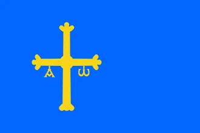
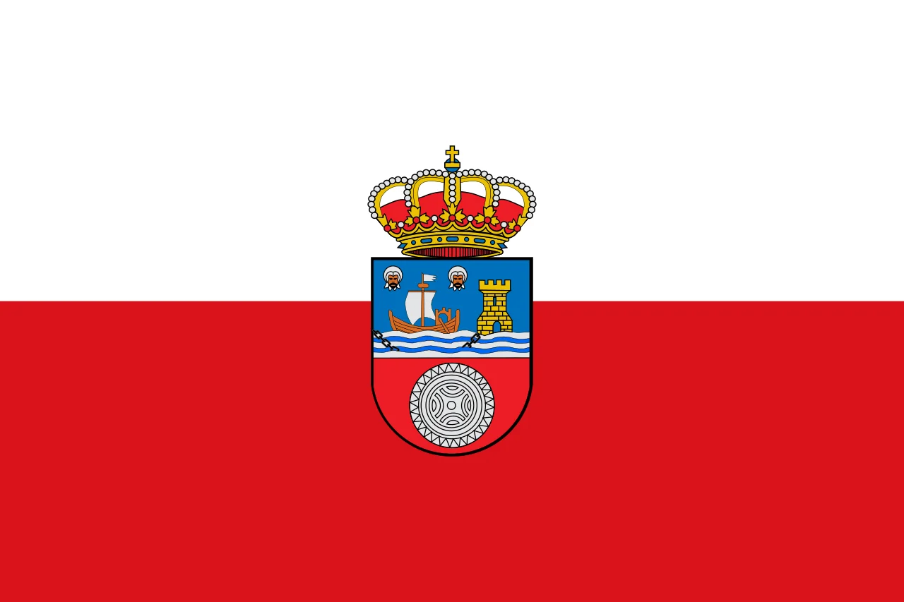
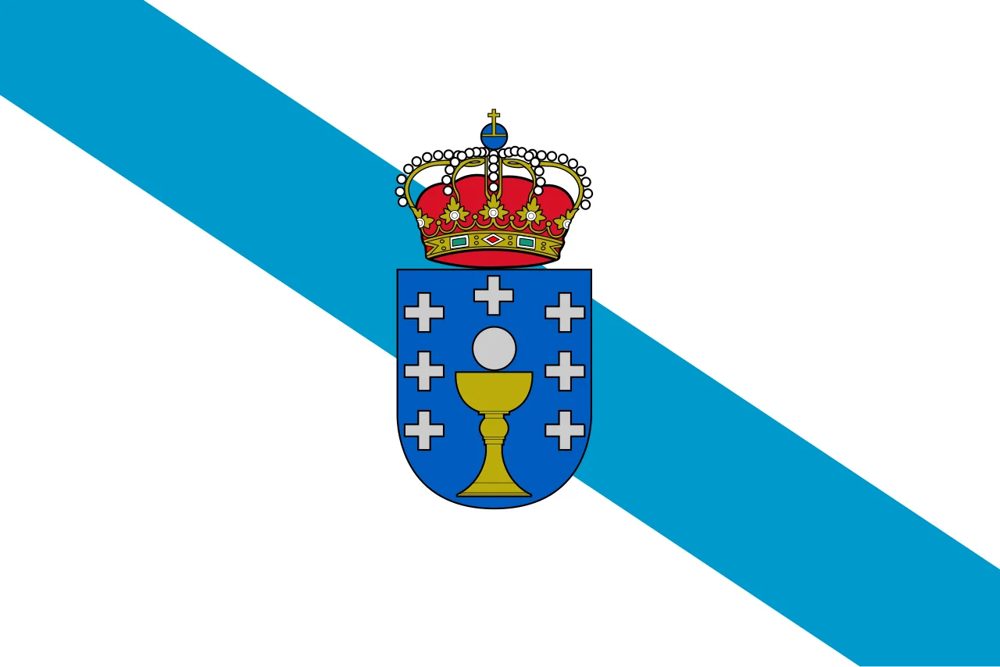
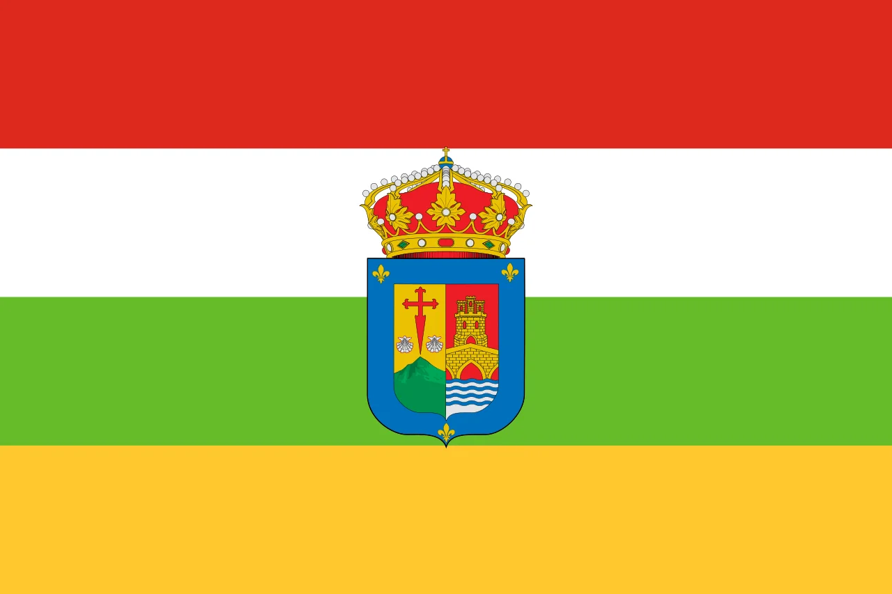
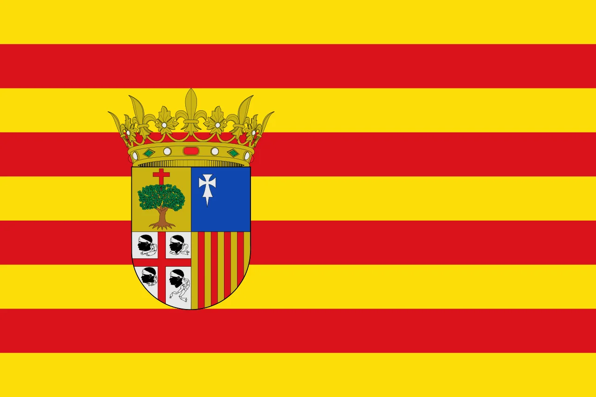
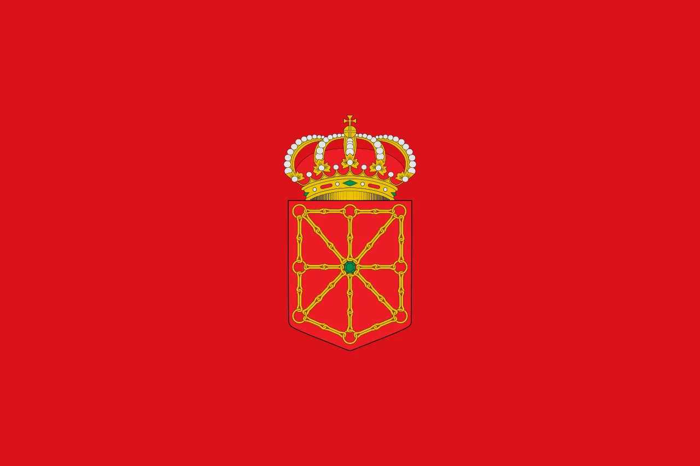

Zonas de Cobertura
Consulta si tu municipio se encuentra dentro de nuestras rutas actuales para la realización de pruebas diagnósticas en zonas rurales.
Selecciona tu localidad en el desplegable para comprobar la disponibilidad del servicio
Principado de Asturias

- Cangas del Narcea
- Taramundi
- Somiedo
- Cudillero
- Luarca
- Ribadesella
- Llanes
- Cangas de Onís
- Tineo
- Grado
- Salas
- Belmonte de Miranda
- Proaza
- Quirós
- Ponga
Cantabria

- Potes
- Comillas
- Liérganes
- Santillana del Mar
- San Vicente de la Barquera
- Noja
- Santoña
- Suances
- Reinosa
- Castro Urdiales
- Laredo
- Torrelavega
- Camargo
- Colindres
- Cabezón de la Sal
Galicia

Lugo
- Ribadeo
- Mondoñedo
- O Cebreiro
- Viveiro
- Foz
- Sarria
- Monforte de Lemos
- Vilalba
Ourense
- Allariz
- Ribadavia
- O Carballiño
- Xinzo de Limia
- Verín
Pontevedra
- Lalín
- Cambados
- O Grove
- A Estrada
- Sanxenxo
- Baiona
- Tui
A Coruña
- Carballo
- Betanzos
- Noia
- Muros
- Ortigueira
- Ribeira
La Rioja

- Ezcaray
- Santo Domingo de la Calzada
- Haro
- Calahorra
- Arnedo
- Nájera
- Alfaro
- Cervera del Río Alhama
- Pradejón
- Fuenmayor
- Navarrete
- San Asensio
- Anguiano
- Briones
- Quel
Aragón

- Aínsa
- Ansó
- Jaca
- Sabiñánigo
- Benasque
- Graus
- Barbastro
- Boltaña
- Hecho
- Bielsa
- Alquézar
- Campo
- Fiscal
- Ayerbe
- Panticosa
Navarra

- Isaba
- Ochagavía
- Roncal
- Burguete
- Elizondo
- Doneztebe
- Leitza
- Alsasua
- Estella
- Tafalla
- Sangüesa
- Corella
- Cintruénigo
- Peralta
- Puente la Reina
7
Comunidades autónomas
+100
Municipios cubiertos
15
Estudios disponibles
¿Tu municipio no aparece?
Escríbenos y estudiaremos incorporarlo a nuestras rutas de cobertura.
Contáctenos